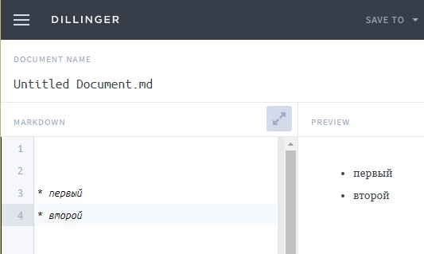
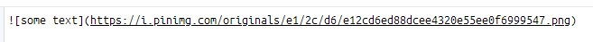
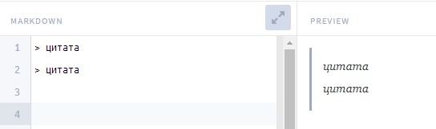
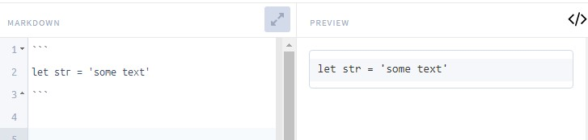
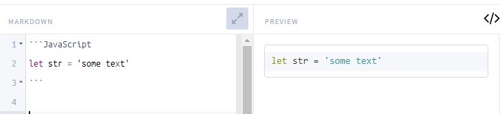
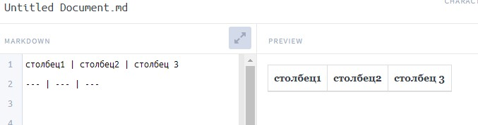

Выделение текста - выделение происходит с помощью звездочек ( * ) - курсив. Две звездочки это сильное выделение ( ** ) - жирный
Заголовки - заголовки определяются решеткой ( # ) - эквивалентно заголову h1 в html ## - h2, ### - h3 и т.д.
Списки - перед элементом списка ставим звездочку и пробел
Изображение -  - обязательно ставим восклицательный знак
Ссылки1 вариант - просто пишем ссылку: http://www.some.ru. 2 вариант [отображаемый текст](http://some.ru)
Цитата - > цитата (т.е. добавляем угловую скобку)
Участок Кода - код заворачивается в три тики и закрывается ими же
Так же мы можем указать что за язык мы используем и в этом случае код будет подсвечен как в редакторе кода
CheckBox - [ ] задача , если в квадратных скобках поставить х - CheckBox будет отмечен
Таблицы
